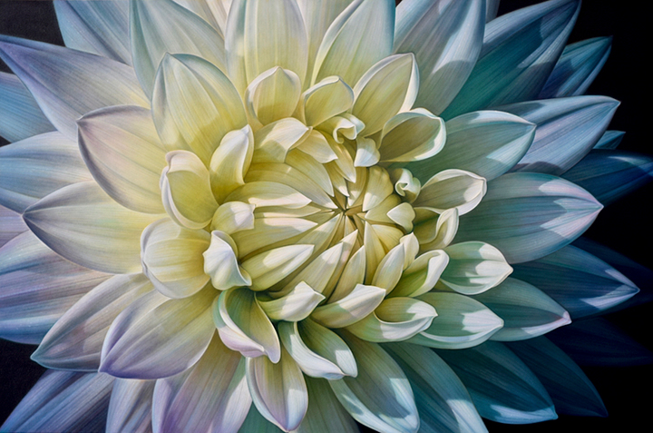
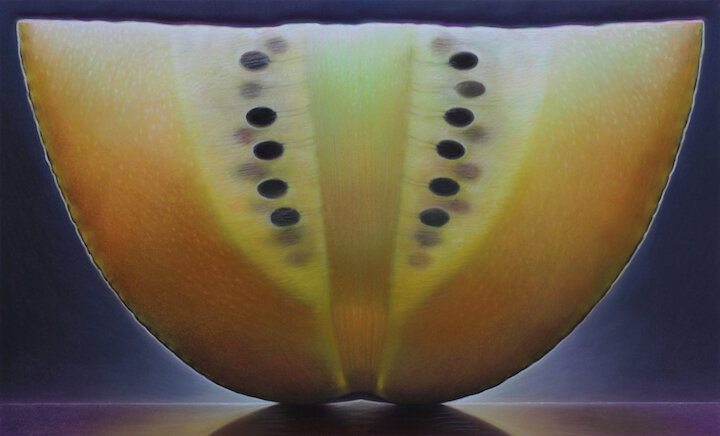

1956
Ohio artist, Dennis Wojtkiewicz [voit-KEV-itch] explores the sensitive nature of time in his oversized oil paintings of fruit and flowers.
The transitory nature of his subject matter is encapsulated and transfixed with heightened sense of realism.
The symbiotic use of color and process achieve the effect of an interior glow while nature's perfect patterning allows each painting to take on a meditative quality.
Professor Emeritus, Painting and Drawing, Bowling Green State University, Bowling Green, OH
1981
M.F.A., Painting and Drawing, Southern Illinois University at Carbondale
SELECTED EXHIBITIONS
Solo
2020
Allusion and Illusion, M.A. Doran Gallery, Tulsa, OK
2019
Visual Revelations, Rosenthal Gallery, Chicago, IL
Citrus Pop!, Maitland Museum of Art and History, Maitland, FL
2018
Dean Day Gallery, Houston, TX
Separate Realities, Butler Institute of Art – Trumbull Branch, Howland, OH
2017
Luminosities, Robert Kidd Gallery, Birmingham, MI
2016
M.A. Doran Gallery, Tulsa, OK
2013
Art Revolution Taipei International Art Fair, Taipei World Trade Center, Taipei, Taiwan
2012
Sugarman Peterson Gallery, Santa Fe, NM
2011
Peterson-Cody Gallery, Santa Fe, NM
2009
Peterson-Cody Gallery, Santa Fe, NM
2008
J. Cacciola Gallery, New York, NY
Tory Folliard Gallery, Milwaukee, WI
2005
J. Cacciola Gallery, New York, NY
Tory Folliard Gallery, Milwaukee, WI
2003
Walter E. Terhune Gallery, Owens Community College, Toledo, OH
2002
Tory Folliard Gallery, Milwaukee, WI
2001
Robert Kidd Gallery, Birmingham, MI
Lanning Gallery, Columbus, OH
Corbino Gallery, Long Boat Key, FL
2000
Glass Garage Gallery, Los Angeles, CA
1999
Transfixion: A Retrospect of Drawings and Paintings From the Past Decade, Springfield Museum of Art, Springfield, OH
Robert Kidd Gallery, Birmingham, MI
1998
Space Gallery, Western Michigan University, Kalamazoo, MI
1997
Robert Kidd Gallery, Birmingham, MI
Toni Birckhead Gallery, Cincinnati, OH
1996
Tory Folliard Gallery, Milwaukee, WI
Lanning Gallery, Columbus, OH
Renaissance Gallery, Bowling Green, OH
1995
Robert Kidd Gallery, Birmingham, MI
1993
Robert Kidd Gallery, Birmingham, MI
Campbell Learning Resources Center Gallery, Monroe Community College, Monroe, MI
Sauder Visual Arts Center Gallery, Bluffton College, Bluffton, OH
1991
Roberta Kuhn Gallery, Columbus, OH
1990
J. Rosenthal Fine Arts, Chicago, IL
1987
J. Rosenthal Fine Arts, Chicago, IL
1982
Illinois Arts Council Gallery, Chicago, IL
1981
Countryside Arts Center, Arlington Heights, IL
Group
2023
National Contemporary Realism Show, M.A. Doran Gallery, Tulsa, OK
Coronation, Plus One Gallery, London, UK
2022
National Contemporary Realism Show, M.A. Doran Gallery, Tulsa, OK
Celebrating 20 Years, Plus One Gallery, London, UK (virtual)
2021
Summer Group Show, Plus One Gallery, London, UK (virtual)
2020
Drawn, Manifest Gallery, Cincinnati, OH
Art Palm Beach 2020, Palm Beach County Convention Center, Palm Beach, FL
Winter Mix, M.A.Doran Gallery
Spring Group Show, T.J.Moberg Gallery, Des Moines, IA
Gallery Group Show, Lurie Gallery, Carmel, IN
2019
National Contemporary Realism Show, M.A. Doran Gallery, Tulsa, OK
On Being: Realism and the BGSU School of Art Painting and Drawing Program, Robert Kidd Gallery, Birmingham, MI; Artlink, Fort Wayne, IN; ArtSpace, Lima, OH
Off Menu: Contemporary Art About Food, Bedford Gallery at the Lesher Center for the Arts, Walnut Creek, CA
Rosenthal Projects Pop-Up Group Show, Rosenthal Gallery (River North Site), Chicago, IL
2018
National Contemporary Realism Show, M.A. Doran Gallery, Tulsa, OK
Then and Now, Rosenthal Gallery, Chicago (Two Person)
2017
National Contemporary Realism Show, M.A. Doran Gallery, Tulsa, OK
Breaking Ground: A Retrospect of Progress (Prizm Creative Community), One SeaGate Center, Toledo, OH
2016
National Contemporary Realism Show, M.A. Doran Gallery, Tulsa, OK
Luminosity, 20 North Gallery, Toledo, OH
2015
La Jolla Gallery Inaugural Exhibition, La Jolla Gallery, San Diego, CA
Wallflowers, Miller Gallery, Cincinnati, OH
National Contemporary Realism Show, M.A. Doran Gallery, Tulsa, OK
Realism to Abstraction, Robert Kidd Gallery, Birmingham, MI
2014
ArtHamptons, Sculpture Fields of Nova's Ark, Bridgehampton, NY
Houston Fine Art Fair, NRG Center, Houston, TX
95th Toledo Area Artist Exhibition, Toledo Museum of Art, Toledo, OH
Vignettes, M.A. Doran Gallery, Tulsa, OK
Face First, Manifest Gallery, Cincinnati, OH
2013
Come On Ouvre, Robert Kidd Gallery, Birmingham, MI
Xpressionism, 33 Contemporary Gallery, Chicago, IL
Contemporary Realism, Miller Gallery, Cincinnati, OH
John Axton, Jennifer Davenport, Tamar Kander and Dennis Wojtkiewicz, Ventana Fine Art, Santa Fe, NM
High (Realism's Realism), Manifest Gallery, Cincinnati, OH
Consumed: Nourishment and Indulgence, Wankelman Gallery, Bowling Green State University, Bowling Green, OH
2012
Sweet Spot, Robert Kidd Gallery, Birmingham, MI
White Christmas: The Holiday Show, Miller Gallery, Cincinnati, OH
2011
Still Life Now: Nine Contemporary Artists, Art Space, Lima, OH
Contemporary Realism, Miller Gallery, Cincinnati, OH
2010
Point of Departure: Five Contemporary Realists, McAlear Gallery, Schedel Gardens, Elmore, Ohio; Gelbke Fine Arts Center, Hiram College, Hiram, Ohio
Spring at Last, Peterson-Cody Gallery, Santa Fe, NM
Year of the Chimera 6.2, Glass Garage Gallery, Los Angeles, CA
2009
National Contemporary Realism 2009, M.A. Doran Gallery, Tulsa, OK
Valentine’s Show 2009, Castle Gallery, Fort Wayne, IN
Super Real: Different Angles of Photorealism, The Citadel Art Foundation, Canadian, TX
Bods: The Contemporary Figure, Robert Kidd Gallery, Birmingham, MI
2008
Santa Fe International Contemporary Art Fair, El Museo Cultural, Santa Fe, NM
Toronto International Art Fair, Metro Toronto Convention Centre, Toronto, Ontario
2007
Toronto International Art Fair, Metro Toronto Convention Centre, Toronto, Ontario
Los Angeles Art Show, Barker Hanger, Santa Monica, CA
Art Miami, Miami Beach Convention Center, Miami, FL
Bridge Art Fair Chicago 07, West Mart Center, Chicago, IL
Wolfe, Wilcox, Wojtkiewicz, Evan Lurie Gallery, Carmel, IN
Concepts in Realism 2007, Las Manos Gallery, Chicago, IL
2006
Realism, Robert Kidd Gallery, Birmingham, MI
Fresh Paint, Hudson Gallery, Sylvania, OH
Art Miami, Miami Beach Convention Center, Miami, FL
ArtPalm Beach Modern and Contemporary Art Fair, International Pavilion of the Palm Beaches, Palm Beach, FL
The Toledo Federation of Art Societies, Leslie Adams Gallery, Toledo, OH
Concepts in Realism 2006, Las Manos Gallery, Chicago, IL
2005
Art Palm Beach Modern and Contemporary Art Fair, International Pavilion, Palm Beach, FL
Art Miami, Miami Beach Convention Center, Miami, FL
Chicago Contemporary and Classic Art Fair, Navy Pier, Chicago, IL
Twelve Plus One: Concepts in Realism, Las Manos Gallery, Chicago, IL
Fruitful Abundance, Gallery at the Garden, Chicago Botanic Garden, Glencoe, IL
Drawing on Nature, Klemm Gallery, Sienna Heights University, Adrian, MI
50th Anniversary Exhibition, ArtSpace, Lima, OH
XXX Three Decades of Art, Robert Kidd Gallery, Birmingham, MI
2004
Art Palm Beach Modern and Contemporary Art Fair, International Pavilion, Palm Beach, FL
ArtChicago 2004, Navy Pier, Chicago
USArtists: American Fine Art Show, 33rd Street Armory, Philadelphia, PA
Chicago Images, Frederick Baker Gallery, Chicago
2003
J. Cacciola Gallery, New York, NY (two-person)
Art Palm Beach Modern and Contemporary Art Fair, International Pavilion, Palm Beach, FL
2-D by Five, University Gallery, Tiffin University, Tiffin, OH
10th Anniversary Exhibition, 20 North Gallery, Toledo, OH
2002
New Blood II, Finer Things Gallery, Nashville, TN
Nature Our Way, Glass Garage Gallery, Los Angeles, CA
Small Pleasures, J. Cacciola Galleries, New York, NY
Palm Springs International Art Fair, (Finer Things Gallery, Nashville), Palm Springs Convention Center, Palm Springs, CA
2000
Dealer's Choice, Robert Kidd Gallery, Birmingham, MI
Things, Lanning Gallery, Columbus, OH
1999
A Feast for the Eyes, Brevard Museum of Art and Science, Melbourne, FL (three-person)
Trompe L'Oeil, Mansfield Art Center, Mansfield, OH
A Separate Reality: Five Realist Painters, Gallery One, Elgin Community College, Elgin, IL
1998
National Horse Show, Robert Kidd Gallery, Birmingham, MI
French Foundations-American Experiences: Five Realists from the Atelier Neo Medici, SIC Art Gallery, Southeastern Illinois College, Harrisburg, IL
1996
20th Anniversary Exhibit, Robert Kidd Gallery, Birmingham, MI
Suddenly It's Summer, Lanning Gallery, Columbus, OH
New!! New!! New!! Group Invitational Exhibit, Robert Kidd Gallery, Birmingham, MI
1995
Definitions of Vision, Artspace/Lima, Lima, OH
1994
Diversity Among Friends-Five Realists, 20 North Gallery, Toledo, OH
Historic Traditions in Contemporary Realism, University Museum, Southern Illinois University, Carbondale, IL
Literal Illusions, Tory Folliard Gallery, Milwaukee, WI
1993
La Primavera-An Artist's View of Spring, Community Gallery of Art, College of Lake County, Grayslake, IL
1992
Art on Tour (Texas Fine Arts Association), Laguna Gloria Art Museum, Austin; University Gallery, University of Texas-El Paso; University Gallery, Texas A&M University; Texarkana Arts and Humanities Council Gallery, Texarkana; Gallery 1114-Arts Assembly of Midland, Midland; Grayson County College Gallery, Denison
From the Garden, Robert Kuhn Gallery, Columbus, OH
Still Lifes, Jan Cicero Gallery, Chicago, IL
1991
Anniversary Show, Robert Kidd Gallery, Birmingham, MI
The Painterly Eye: Contemporary Ohio Landscape and Figure Painting, Fort Hayes Visual Arts Gallery, Columbus, OH
Introspections: A Self-Portrait Invitational, Community Gallery of Art, College of Lake County, Grayslake, IL
Best of Ohio 1990, Lakeside Gallery, Lakeside, MI
1990
A Vision of Their Own, Robert Kuhn Gallery, Chicago, IL
Monochrome/Polychrome: Contemporary Realist Drawings, Fine Arts Gallery, Florida State University, Tallahassee, FL
Landscapes, J. Rosenthal Fine Arts, Chicago, IL
1989
Contemporary American Still Lives, J. Rosenthal Fine Arts, Chicago, IL
The 78th Annual Exhibition-Chicago, Meier Museum of Art, Randolph Macons Women's College, Lynchburg, VA
1988
Works on Paper, J. Rosenthal Fine Arts, Chicago, IL
1987
Miniatures, J. Rosenthal Fine Arts, Chicago, IL
1986
Works on Paper, J. Rosenthal Fine Arts, Chicago, IL
1985
Realism, J. Rosenthal Fine Arts, Chicago, IL
City Sights: Ten Chicago Painters, Westgate Building, University of Illinois- Chicago
1984
Chicago to Paris / Round Trip, Countryside Arts Center, Arlington Hts, IL
The Figurative Art League, Noyes Cultural Center, Evanston, IL
Eight on Eight, Marshall Fields (Water Tower Place), Chicago, IL
1983
Illinois Images: 21 Painters, Springfield Art Association, Springfield, IL
1982
Atelier Neo-Medici, Gallery Lavignes, Paris, France
The Figure, Joy Horwich Gallery, Chicago, IL
33rd Illinois Invitational, Illinois State Museum, Springfield, IL
1980
Texas Fine Arts Association Traveling Exhibition, Baylor University, University of Texas-Arlington; Texas Women's College; Kilgore College; Trinity University; Paris Junior College; Angelina College
GRANTS
Ohio Arts Council Individual Artist Fellowship for Painting, 2001
Ohio Arts Council Individual Artist Fellowship for Painting, 1992
SELECTED COLLECTIONS
Baxter Labs, Chicago, IL
Blue Cross/Blue Shield, Chicago, IL
Bristol Myers, Evansville, IN
Butler Institute of American Art, Youngstown, OH
CCC Institutional Services, Chicago, IL
Clovis Community College, Clovis, NM
Columbus Public Library, Columbus, OH
Davidson Collection of American Realism, Chicago, IL
Energy Capital Partners, Short Hills, NJ and San Diego, CA
Evansville Museum of Arts and Sciences, Evansville, IN
Fidelity Investment Corporation, Boston, MA
Four Seasons Hotel, Bermuda
GLC Enterprises, Minneapolis, MN
Gofen and Glossberg LLC, Chicago, IL
Household Finance, Chicago, IL
Howard A. Tullman Collection, Chicago, IL
Hoyt Institute of Fine Arts, New Castle, PA
John Buck Realty, Chicago, IL
Kemper Insurance, Chicago, IL
Lincoln National Life, Fort Wayne, IN
Marshall Field, Chicago, IL
Monroe Community College, Monroe, MI
Morton Hotel, Chicago, IL
Principal Insurance, Des Moines, IA
Pro Medica, Toledo, OH
Robert Rossi-Arnaud Collection, Paris, France
Rosenfeld, Zweig, & Associates, Northbrook, IL
Success Group, Columbus, OH
University of South Dakota, Vermillion, SD
Mr. Wojtkiewicz lives and works in Bowling Green, Ohio. He is Professor Emeritus at Bowling Green State University where he has taught painting and drawing in the School of Art beginning in 1988. His work has been shown throughout the United States, as well as China and the UK. Since 2005 his work has been featured in international art fairs in Chicago, Los Angeles, Miami, Palm Beach, Santa Fe, Taipei and Toronto. He is the recipient of two Ohio Arts Council Individual Fellowships and has both paintings and drawings represented in major public, private and corporate collections.